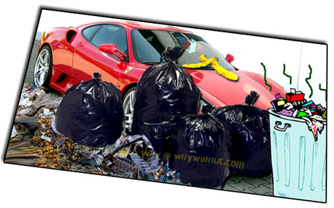
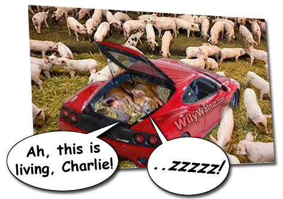
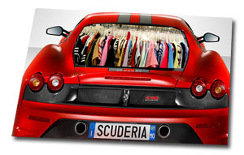
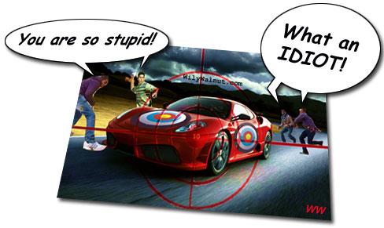
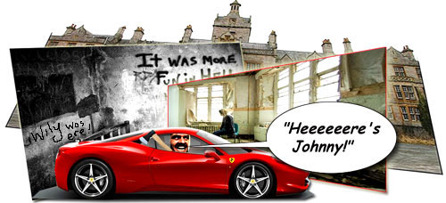
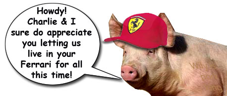

Brain Squeezers: Brain Squeezer Special: The
Ferarri Brain
YOUR BRAIN IS A FERRARI, SO WHY ARE YOU (AB)USING IT...

1) ...As a trash can?

2) ...As a pig sty?

3) ...As a cupboard for your clothes?
4) ...As a field to grow weeds?

5) ...As a target for throwing rocks?

6) ...As a home for the criminally insane?
Your brain is finely-tuned machine with awesome capabilities, just like a Ferrari. But you are
probably not treating it as such. Scan your systems. Scan your life. Check whether you are using your
high-performance brain in mundane or wasteful ways. Are you dumping trashy or limiting memes in it? Do you let
swinish beliefs and attitudes live in it? Do you stuff it with other people's ideas of what's important,
fashionable, or in right now? Is it packed with unimportant stuff -- distractions, inhibitors, fears? Are you
leaving your brain untended so that erroneous and limiting ideas run wild? Are you abusing it with substances that
damage it's functioning? Does your negativity sabotage your brain's creativity and natural brilliance? Are you
hosting crazy thoughts, insane beliefs about your past, or ideas that are flat-out wonky? Uh... STOP!
KEY POINT
FERRARI OR NOT. YOUR BRAIN IS ONLY AS GOOD AS
THE USE YOU PUT IT TO.
3 Quick Tips To Improve
The Use of Your Brain
1. Death Watch -- the sands of
Time are racing out. There are only so many more laps of the track before you cross the finishing line that marks the end of
this existence. You don't know how many or how few you have left.
Ask yourself throughout your day, "Is this really how I want to spend my time? Is this what I'm here to do, to be, to think, to
experience? Or is there more than this? What do I REALLY want to
achieve in this life?"
Action: Creative Fun and Games With The Grim Reaper! How to
use DEATH to inspire creative living!!
2. Brain Fuel -- are you chugging along on chip fat, dribbling away on a dirty diesel, revving your engine on 4-star, or
supercharging your turbo thrusters
on rocket fuel? Remember: garbage in, garbage out. A high performance machine like your brain deserves the best
fuel you can give it. Improve your diet with foods that benefit your
brain and eliminate those that cause it to misfire. Stay hydrated to keep your mental engine purring. Take
neuroceutical supplements if you are at an age where you need extra protection. Investigate coconut oil and
the protective effects it is said to have with regard to degenerative mental diseases such as dementia
and Alzheimer's.
And what about your mental diet? Are you learning
something new every day? Do you seek out subjects that challenge you to move
into a higher gear? What are your choices of activity doing to your brain?
Action: Visit Ted.com and regularly partake of the excellent talks.
3. Pressing the Accelerator -- you have all this redundant capacity. All this mindpower which is under utilised or
misdirected. You deserve to get more from your "Thought Ferrari". That engine needs to be fine tuned
and run at the proper speeds. I always recommend meditation first and foremost for this
purpose. It's the fundamental service that makes your brain better able to
function at a higher frequency. Particularly with regard to your purpose and how you choose to be in
life.
Meditation creates space into which awareness can
accelerate. It doesn't have to be complicated. But if you want to get up to speed as fast as possible, and
with the best technical help, a Formula One-style program like the
Brain Evolution System can really help -- if you use it. It teaches your brain how to use the various higher
gears and functions built into it's machinery, so to speak.
Action: Check out the most thorough
6-month long day-by-day review
of The Brain Evolution System which can be found here.
If you prefer, you can go
straight to the BrainEv site (where you can currently sample the
program for free) by clicking the graphic below :
(DISCLOSURE: Please be aware that should you visit via this link, and ultimately purchase the program after
testing the FREE trial Mp3, I will receive an affiliate commission. My recommendation is based on having first
purchased the Brain EV set in 2008. I have it loaded on my iPod and, all these years on,
still listen to it regularly.)
With Love & Thanks,
Wily Walnut

|